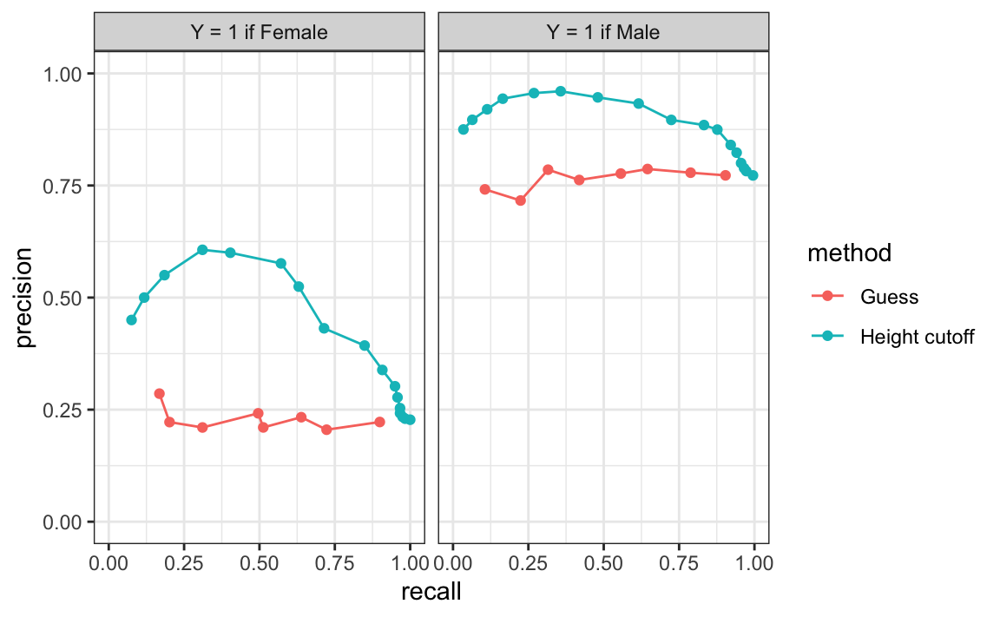

27 Performance Metrics
Before we start describing approaches to optimize the way we build algorithms, we first need to define what we mean when we say one approach is better than another. In this section, we focus on describing ways in which machine learning algorithms are evaluated. Specifically, we need to quantify what we mean by “better”.
For our first introduction to machine learning concepts, we will start with a boring and simple example: how to predict sex using height. As we explain how to build a prediction algorithm with this example, we will start to set down the first building block needed to understand machine learning. Soon enough, we will be undertaking more interesting challenges.
We introduce the caret package, which provides useful functions to facilitate machine learning in R, and we describe it in more detail in Section 31.2. For our first example, we use the height data provided by the dslabs package.
We start by noting that heights$sex provides the outcomes (Y) and heights$height is our predictor (X). To simplify the code used throughout this chapter, we rename the variables:
In this example, we have a single predictor, and the outcome is categorical: each observation is either Male or Female. Because the average height difference between males and females is modest relative to the variability within each group, we should not expect to predict \(Y\) with very high accuracy. But can we do better than random guessing? To answer this, we first need a quantitative way to define what “better” means.
In machine learning applications in R, and particularly when using the caret package, categorical outcomes should be stored as factors. Doing so ensures they are treated as labels rather than numeric values, preventing errors that arise when numeric codes are mistakenly interpreted as quantitative.
For binary outcomes, caret treats the first factor level as \(Y=1\) and the second as \(Y=0\). Because R assigns factor levels in alphabetical order by default, in our examples this means females are coded as \(Y=1\) and males as \(Y=0\).
27.1 Training and test sets
Ultimately, a machine learning algorithm is evaluated on how it performs in the real world with completely new datasets. However, when developing an algorithm, we usually have a dataset for which we know the outcomes, as we do with the heights: we know the sex of every student in our dataset. Therefore, to mimic the ultimate evaluation process, we typically split the data into two parts and act as if we don’t know the outcome for one of these. We stop pretending we don’t know the outcome to evaluate the algorithm, but only after we are done constructing it. We refer to the group for which we know the outcome, and that we use to develop the algorithm, as the training set. We refer to the group for which we pretend we don’t know the outcome as the test set.
A standard way of generating the training and test sets is by randomly splitting the data. The caret package includes the function createDataPartition that helps us generate indexes for randomly splitting the data into training and test sets:
set.seed(2010)
train_index <- createDataPartition(heights$y, times = 1, p = 0.5, list = FALSE)The argument times is used to define how many random samples of indexes to return, the argument p is used to define what proportion of the data is represented by the index, and the argument list is used to decide if we want the indexes returned as a list or not.
We can use the result of the createDataPartition function call to define the training and test sets as follows:
train_set <- heights[train_index, ]
test_set <- heights[-train_index, ]We will now develop an algorithm using only the training set. Once we are done developing the algorithm, we will freeze it and evaluate it using the test set. The simplest way to evaluate the algorithm when the outcomes are categorical is by simply reporting the proportion of cases that were correctly predicted in the test set. This metric is usually referred to as overall accuracy.
27.2 Overall accuracy
To demonstrate the use of overall accuracy, we will build two competing algorithms and compare them.
Let’s start by developing the simplest possible machine algorithm: guessing the outcome.
Note that we are completely ignoring the predictor and simply guessing the sex.
The overall accuracy is simply defined as the overall proportion that is predicted correctly:
mean(y_hat == test_set$y)
#> [1] 0.482Not surprisingly, our accuracy is about 50%. We are guessing!
Can we do better? Exploratory data analysis suggests we can because, on average, males are slightly taller than females. But how do we make use of this insight? Let’s try another simple approach: predict 1 (Female) if height is less than two standard deviations from the average male height:
The accuracy goes up from 0.5 to about 0.8:
mean(test_set$y == y_hat)
#> [1] 0.771But can we do even better? In the example above, we used a cutoff of 62, but we can examine the accuracy obtained for other cutoffs and then pick the value that provides the best results. But remember, it is important that we optimize the cutoff using only the training set: the test set is only for evaluation. Although for this simplistic example it is not much of a problem, later we will learn that evaluating an algorithm on the training set can lead to overfitting, which often results in over-optimistic assessments.
Here we examine the accuracy of 10 different cutoffs and pick the one yielding the best result:
We can make a plot showing the accuracy obtained on the training set for males and females:

We see that the maximum value is:
max(accuracy)
#> [1] 0.832which is much higher than 0.5. The cutoff resulting in this accuracy is:
best_cutoff <- cutoffs[which.max(accuracy)]
best_cutoff
#> [1] 64We can now test this cutoff on our test set to make sure our accuracy is not overly optimistic:
We see that it is a bit lower than the accuracy observed for the training set. This is because we used the training set to select the cutoff, so there is some overtraining. However, out cutoff-based approach is still better than guessing. And by testing on a dataset that we did not train on, we know our improvement is not due to overtraining.
27.3 The confusion matrix
The prediction rule we developed in the previous section predicts female if the student is shorter than 64 inches. Given that the average female is about 64 inches, this prediction rule seems wrong. What happened? If a student is the height of the average female, shouldn’t we predict female?
Generally speaking, overall accuracy can be misleading. To understand why, we begin by constructing a confusion matrix, a table that counts how often each combination of prediction and true outcome occurs. In R, we could create this table with table, but the caret package provides a convenient function, confusionMatrix, that not only computes the confusion matrix but also reports several additional performance metrics that we will use later:
cm <- confusionMatrix(data = y_hat, reference = test_set$y)
cm$table
#> Reference
#> Prediction Female Male
#> Female 54 29
#> Male 65 377If we study this table closely, it reveals a problem. If we compute the accuracy separately for each sex (in the next section, we explain that, in this context, sensitivity and specificity are equivalent to accuracy for females and males, respectively) we get:
cm$byClass[c("Sensitivity", "Specificity")]
#> Sensitivity Specificity
#> 0.454 0.929We notice an imbalance: too many females are predicted to be male. We are calling almost half of the females male! How can our overall accuracy be so high then? This is because the prevalence, defined as the proportion of \(Y=1\) in our data, is low. These heights were collected from three data sciences courses, two of which had higher male enrollment:
cm$byClass["Prevalence"]
#> Prevalence
#> 0.227So when computing overall accuracy, the high percentage of mistakes made for females is outweighed by the gains in correct calls for men.
This type of bias can actually be a big problem in practice. If your training data is biased in some way, you are likely to develop algorithms that are biased as well. The fact that we used a test set does not matter because it is also derived from the original biased dataset. This is one of the reasons we look at metrics other than overall accuracy when evaluating a machine learning algorithm.
There are several metrics that we can use to evaluate an algorithm in a way that prevalence does not cloud our assessment, and these can all be derived from the confusion matrix. A general improvement to using overall accuracy is to study sensitivity and specificity separately.
27.4 Sensitivity and specificity
To define sensitivity and specificity, we need a binary outcome. When outcomes are categorical, we can still use these terms by focusing on one specific category of interest. For example, in a digit recognition task, we might ask: What is the specificity of correctly identifying the digit 2 as opposed to any other digit? Once we choose a specific category, we treat observations in that category as positive cases (\(Y=1\)) and all others as negative cases (\(Y=0\)). This binary framing allows us to compute sensitivity and specificity in the usual way.
In general, sensitivity is defined as the ability of an algorithm to predict a positive outcome when the actual outcome is positive: \(\hat{Y}=1\) when \(Y=1\). Because an algorithm that calls everything positive (\(\hat{Y}=1\) no matter what) has perfect sensitivity, this metric on its own is not enough to judge an algorithm.
For this reason, we also examine specificity, which is generally defined as the ability of an algorithm to predict a negative \(\hat{Y}=0\) when the actual outcome is a negative \(Y=0\). We can summarize in the following way:
- High sensitivity: \(Y=1 \implies \hat{Y}=1\)
- High specificity: \(Y=0 \implies \hat{Y} = 0\)
Although the above is often considered the definition of specificity, another way to think of specificity is by the proportion of positive calls that are actually positive:
- High specificity: \(\hat{Y}=1 \implies Y=1\).
To provide precise definitions, we name the four entries of the confusion matrix:
| Actually Positive | Actually Negative | |
|---|---|---|
| Predicted positive | True positives (TP) | False positives (FP) |
| Predicted negative | False negatives (FN) | True negatives (TN) |
Sensitivity is typically quantified by \(TP/(TP+FN)\), the proportion of actual positives (the first column = \(TP+FN\)) that are called positives (\(TP\)). This quantity is referred to as the true positive rate (TPR) or recall.
Specificity is defined as \(TN/(TN+FP)\) or the proportion of negatives (the second column = \(FP+TN\)) that are called negatives (\(TN\)). This quantity is also called the true negative rate (TNR).
There is another way of quantifying specificity which is \(TP/(TP+FP)\) or the proportion of outcomes called positives (the first row or \(TP+FP\)) that are actually positives (\(TP\)). This quantity is referred to as positive predictive value (PPV) and also as precision. Note that, unlike TPR and TNR, precision depends on prevalence since higher prevalence implies you can get higher precision even when guessing.
The multiple names can be confusing, so we include a table to help us remember the terms. The table includes a column that shows the definition if we think of the proportions as probabilities.
| Measure of | Name 1 | Name 2 | Definition | Probability representation |
|---|---|---|---|---|
| sensitivity | TPR | Recall | \(\frac{\mbox{TP}}{\mbox{TP} + \mbox{FN}}\) | \(\mathrm{Pr}(\hat{Y}=1 \mid Y=1)\) |
| specificity | TNR | 1-FPR | \(\frac{\mbox{TN}}{\mbox{TN}+\mbox{FP}}\) | \(\mathrm{Pr}(\hat{Y}=0 \mid Y=0)\) |
| specificity | PPV | Precision | \(\frac{\mbox{TP}}{\mbox{TP}+\mbox{FP}}\) | \(\mathrm{Pr}(Y=1 \mid \hat{Y}=1)\) |
The caret function confusionMatrix computes all these metrics for us once we define which category is the positive (\(Y=1\)). The function expects factors as input, and the first level is considered the positive outcome, though it can be redefined with the positive argument.
If you type this into R:
cm <- confusionMatrix(data = y_hat, reference = test_set$sex)
print(cm)you will see several metrics including accuracy, sensitivity, specificity, and PPV.
You can access these directly, for example, like this:
cm$overall["Accuracy"]
#> Accuracy
#> 0.821
cm$byClass[c("Sensitivity","Specificity", "Prevalence", "Pos Pred Value")]
#> Sensitivity Specificity Prevalence Pos Pred Value
#> 0.454 0.929 0.227 0.651We can see that the high overall accuracy is possible despite relatively low sensitivity. As we hinted at above, the reason this happens is because of the low prevalence (0.23): the proportion of females is low. Because prevalence is low, failing to predict females correctly (low sensitivity) does not lower the overall accuracy as much as failing to predict males correctly (low specificity). This is an example of why it is important to examine sensitivity and specificity and not just accuracy.
Before applying this algorithm to general datasets, we need to ask ourselves if prevalence in the general population will be the same as in our training dataset.
27.5 Balanced accuracy and \(F_1\) score
Although we usually recommend studying both specificity and sensitivity, it is often useful to have a one-number summary, for example, for optimization purposes. One metric that is preferred over overall accuracy is the average of specificity and sensitivity, referred to as balanced accuracy. Because specificity and sensitivity are rates, it is more appropriate to compute the harmonic average. In fact, the \(F_1\)-score, a widely used one-number summary, is the harmonic average of precision and recall:
\[ \frac{1}{\frac{1}{2}\left(\frac{1}{\mbox{recall}} + \frac{1}{\mbox{precision}}\right) } = 2 \times \frac{\mbox{precision} \cdot \mbox{recall}} {\mbox{precision} + \mbox{recall}}. \]
The \(F_1\)-score can be adapted to weigh specificity and sensitivity differently. This is useful in practice because, depending on the context, some types of errors are more costly than others. For instance, in the case of plane safety, it is much more important to maximize sensitivity over specificity: failing to predict a plane will malfunction before it crashes is a much more costly error than grounding a plane when, in fact, the plane is in perfect condition. In a capital murder criminal case, the opposite is true since a false positive can lead to executing an innocent person.
To adapt \(F_1\), we define a weight \(\beta\) to represent how much more important sensitivity is compared to specificity and consider a weighted harmonic average:
\[ \frac{1}{\frac{\beta^2}{1+\beta^2}\frac{1}{\mbox{recall}} + \frac{1}{1+\beta^2}\frac{1}{\mbox{precision}} } \]
The F_meas function in the caret package computes this summary with \(\beta\) defaulting to 1.
Let’s rebuild our prediction algorithm, but this time maximizing the F-score instead of overall accuracy:
As before, we can plot these \(F_1\) measures versus the cutoffs:

We see that it is maximized at \(F_1\) value of:
max(F_1)
#> [1] 0.617This maximum is achieved when we use the following cutoff:
best_cutoff <- cutoffs[which.max(F_1)]
best_cutoff
#> [1] 66A cutoff of 66 makes more sense than 64 because it falls closer to the midpoint between the average heights of males and females. Additionally, it provides a better balance between sensitivity and specificity in the resulting confusion matrix.
y_hat <- factor(ifelse(test_set$x <= best_cutoff, "Female", "Male"))
sensitivity(y_hat, test_set$y)
#> [1] 0.672
specificity(y_hat, test_set$y)
#> [1] 0.837We now see that we do much better than guessing, that both sensitivity and specificity are relatively high.
27.6 ROC and precision-recall curves
When comparing the two methods (guessing versus using a height cutoff), we looked at accuracy and \(F_1\). The second method clearly outperformed the first. However, while we considered several cutoffs for the second method, for the first we only considered one approach: guessing with equal probability. Be aware that guessing Male with higher probability would give us higher accuracy due to the bias in the sample. But, as described above, this would come at the cost of lower sensitivity. The curves we describe in this section will help us see this.
Remember that for each cutoff, we can get a different sensitivity and specificity. For this reason, a very common approach to evaluating methods is to compare them graphically by plotting both.
A widely used plot that does this is the receiver operating characteristic (ROC) curve. If you are wondering about this name, consult the ROC Wikipedia page1.
The ROC curve plots sensitivity, represented as the TPR, versus 1 - specificity represented as the false positive rate (FPR). Here we compute the TPR and FPR needed for different probabilities of guessing male:
We can use similar code to compute these values for our our second approach. By plotting both curves together, we are able to compare sensitivity for different values of specificity:

We see that we obtain higher sensitivity with the cutoff approach for all values of specificity, which implies it is in fact a better method than guessing. Keep in mind that ROC curves for guessing always fall on the identity line. Also, note that when making ROC curves, it is often nice to add the cutoff associated with each point.
The packages pROC and plotROC are useful for generating these plots.
ROC curves have one weakness and it is that neither of the measures plotted depends on prevalence. In cases in which prevalence matters, we may instead make a precision-recall plot. The idea is similar, but we instead plot precision against recall:

From the plot on the left, we immediately see that the precision of guessing is not high. This is because the prevalence is low. From the plot on the right, we see that if we change \(Y=1\) to mean Male instead of Female, the precision increases. Note that the ROC curve would remain the same.
27.7 Prevalence matters in practice
A machine learning algorithm with very high TPR and TNR may not be useful in practice when prevalence is close to either 0 or 1. To see this, consider the case of a doctor that specializes in a rare disease and is interested in developing an algorithm for predicting who has the disease.
The doctor shares data with about 1/2 cases and 1/2 controls and some predictors. You then develop an algorithm with TPR=0.99 and TNR = 0.99. You are excited to explain to the doctor that this means that if a patient has the disease, the algorithm is very likely to predict correctly. The doctor is not impressed and explains that your TNR is too low for this algorithm to be used in practice.
This is because, although the study dataset was constructed with equal numbers of cases and controls, the disease is very rare in the general population, with a prevalence of only about 0.5%.
We can use Bayes rule to compute the precision we expect you algorithm to have in the real population: \[ \begin{aligned} &\mathrm{Pr}(Y = 1\mid \hat{Y}=1) = \mathrm{Pr}(\hat{Y}=1 \mid Y=1) \frac{\mathrm{Pr}(Y=1)}{\mathrm{Pr}(\hat{Y}=1)} \implies\\ &\text{Precision} = \text{TPR} \times \frac{\text{Prevalence}}{\text{TPR}\times \text{Prevalence} + \text{FPR}\times(1-\text{Prevalence})} \approx 0.33 \end{aligned} \]
Here is plot of precision as a function of prevalence with TPR and TNR both equal to 99%:

Although your algorithm achieves a precision of about 99% on the balanced training data (with 50% prevalence), its precision would drop to roughly 33% when applied to the general population, where the disease prevalence is only 0.5%. A doctor cannot rely on a test for which two-thirds of positive results are false positives. Even with perfect sensitivity, the precision would still be about 33% under these conditions. To make the algorithm clinically useful, you would need to drastically reduce the false positive rate (FPR).
27.8 Mean Squared Error
Up to now we have described evaluation metrics that apply exclusively to categorical data. Specifically, for binary outcomes, we have described how sensitivity, specificity, accuracy, and \(F_1\) can be used to quantify performance. However, these metrics are not useful for continuous outcomes.
In this section, we describe how the general approach to defining “best” in machine learning is to define a loss function, which can be applied to both categorical and continuous data.
The most commonly used loss function is the squared loss function. If \(\hat{y}\) is our predictor and \(y\) is the observed outcome, the squared loss function is simply: \((\hat{y} - y)^2\).
Because we often model \(y\) as the outcome of a random process, theoretically, it does not make sense to compare algorithms based on \((\hat{y} - y)^2\) as the minimum can change from sample to sample. For this reason, we minimize mean squared error (MSE):
\[ \text{MSE} \equiv \mathrm{E}[(\hat{Y} - Y)^2 ] \]
Consider that if the outcomes are binary, the MSE is equivalent to one minus expected accuracy, since \((\hat{y} - y)^2\) is 0 if the prediction was correct and 1 otherwise.
Different algorithms will result in different predictions \(\hat{Y}\), and therefore different MSE. In general, our goal is to build an algorithm that minimizes the loss so it is as close to 0 as possible.
However, note that the mean squared error (MSE) is a theoretical quantity that depends on the unknown data-generating process. How do we estimate it in practice? Because we typically have a test set consisting of many independent observations \(y_1, \dots, y_N\), a natural and widely used estimate of the MSE is based on the average of the squared errors over the test set:
\[ \hat{\mbox{MSE}} = \frac{1}{N}\sum_{i=1}^N (\hat{y}_i - y_i)^2 \]
with the \(\hat{y}_i\) generated completely independently from the the \(y_i\)s.
However, the estimate \(\hat{\text{MSE}}\) is a random variable. In fact, \(\text{MSE}\) and \(\hat{\text{MSE}}\) are often referred to as the true error and apparent error, respectively. Due to the complexity of some machine learning algorithms, it is difficult to derive the statistical properties of how well the apparent error estimates the true error. In Chapter 29, we introduce cross-validation an approach to estimating the MSE.
We conclude this chapter by noting that squared loss is not the only possible choice of loss function. For instance, the mean absolute error (MAE) replaces squared errors \((\hat{Y}_i - Y_i)^2\) with their absolute values \(|\hat{Y}_i - Y_i|\). Other loss functions are also possible, depending on the context and goals of the analysis. In this book, however, we focus on squared loss, since it is by far the most widely used and provides important mathematical conveniences that simplify both theory and computation.
In practice, we often report the root mean squared error (RMSE), which is simply \(\sqrt{\mbox{MSE}}\), because it is in the same units as the outcomes.
27.9 Exercises
In the following exercises, we use the Titanic dataset to explore evaluation metrics for classification using simple decision rules based on continuous predictors. Our goal is not to build a sophisticated model but to understand how accuracy, sensitivity, specificity, precision, and prevalence depend on the choice of cutoff. We will predict survival using variables such as fare (ticket price), age, and passenger class (Pclass), treating survival (Survived) as a binary outcome.
Note that we defined the levels to be c(1,0) to avoid the defailt behaviou of making 0 (first alphabetically) the first level given that caret defines positives \(Y=1\) as the first level.
1. Split the titanic datset into to train_set with 80% of the data and test_set with the remaining 20%.
2. Use Fare (ticket price) as a continuous score to predict survival. Create a simple rule: predict 1 (survived) if Fare > cutoff, otherwise predict 0. Take cutoff = median(train_set$Fare). Compute the accuracy on the test_set. Hint: When using factor(), R orders levels alphabetically by default. This means “0” will come before “1”, so if you convert predictions to a factor without specifying levels, the positive class may be assigned incorrectly. In this dataset, however, Survived has 1 as the first level. Make sure the factor levels of your predictions match the levels of test_set$Survived before computing accuracy or a confusion matrix.
3. How does the accuracy achieved in exercise 2 compare to simply predicting 0 (not survived) for everyone?
4. For the same rule (predict 1 if Fare > cutoff), compute sensitivity, specificity, and prevalence for cutoff = median(Fare). Use sensitivity, specificity, and posPredValue from caret. Interpret each quantity in the context of predicting who survives based only on ticket price.
5. Now repeat exercise 3 but for different cutoffs:
For each cutoff, classify passengers as survived / not survived using Fare > cutoff and plot accuracy computed on the train_set against cutoff.
6. Using the results from exercise 5, best cutoff and compare accuracy with the rule chose on exercise 4 on both train_set and test_set.
7. Generate an ROC curve based on the specificity and sensitivity computed on the test_set. For each point on the curve show the corresponding cutoff associated with that point. Briefly describe the trade-off you see as you move the cutoff: what happens to sensitivity and specificity when you increase the cutoff, and why does this make sense in terms of who tends to buy expensive tickets on the Titanic?
8. Now use a logistic regression model as a more refined continuous score. Fit the model:
fit <- glm(Survived == "1" ~ ., family = binomial, data = train_set)We can obtain predicted probabilities of survival for each individual in both the train and test sets using the predict function:
Classify passengers as survived if this probability is larger than 0.5. How does the accuracy compare when computed on training and test sets? Comment on why the difference is larger than in our previous comparison in exercises 2 and 3.
9. Consider different cutoffs for cutofs <- seq(0.05, 0.95, 0.05) for this probability and generate an ROC curve based in the test set. Based on this ROC curve and the one computed in exercise 7, which method would you say performs better?
10. The overall prevalence of survival in this dataset is:
mean(titanic$Survived == "1")Suppose you deploy your glm-based rule (from exercise 8) in a new setting where survival prevalence is only 20% instead. Explain qualitatively (no code needed) how this change in prevalence would affect precision (positive predictive value), even if sensitivity and specificity remained the same. Why is it important to think about prevalence when evaluating a model?
https://en.wikipedia.org/wiki/Receiver_operating_characteristic↩︎